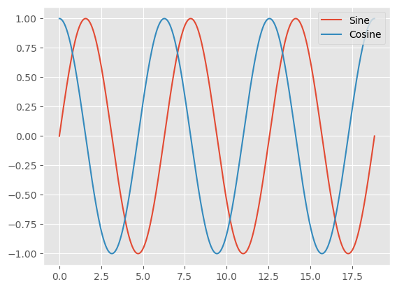
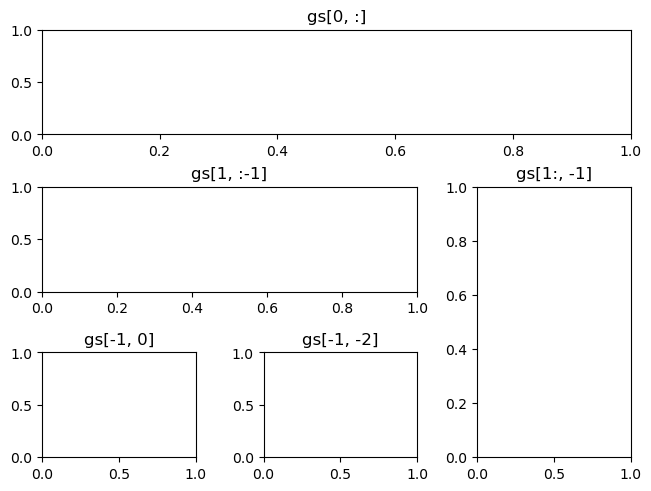

handon-c5#
%matplotlib inline
import matplotlib.pyplot as plt
import numpy as np
plt.style.use('ggplot')
data = np.random.randn(10)
print(data)
# Let’s visualize it now:
plt.plot(data)
plt.show()
[-1.20761431 1.00154026 -1.26392972 -0.39038486 -0.37801049 1.34262954
0.75717301 -1.23746785 2.85110054 -1.39016193]
print(plt.style.available)
['Solarize_Light2', '_classic_test_patch', '_mpl-gallery', '_mpl-gallery-nogrid', 'bmh', 'classic', 'dark_background', 'fast', 'fivethirtyeight', 'ggplot', 'grayscale', 'seaborn-v0_8', 'seaborn-v0_8-bright', 'seaborn-v0_8-colorblind', 'seaborn-v0_8-dark', 'seaborn-v0_8-dark-palette', 'seaborn-v0_8-darkgrid', 'seaborn-v0_8-deep', 'seaborn-v0_8-muted', 'seaborn-v0_8-notebook', 'seaborn-v0_8-paper', 'seaborn-v0_8-pastel', 'seaborn-v0_8-poster', 'seaborn-v0_8-talk', 'seaborn-v0_8-ticks', 'seaborn-v0_8-white', 'seaborn-v0_8-whitegrid', 'tableau-colorblind10']
plt.style.use('classic')
plt.plot(data)
plt.show()
plt.style.use('default')
#Let’s show the data with the following:
plt.plot(data)
plt.show()
n= 3
data = np.linspace(0, 2*n*np.pi, 300)
# n * 2pi
def sinusoidal(sty):
plt.style.use(sty)
fig, ax = plt.subplots()
ax.plot(data, np.sin(data), label='Sine')
ax.plot(data, np.cos(data), label='Cosine')
ax.legend()
sinusoidal('default')
plt.show()
sinusoidal('ggplot')
plt.show()

sinusoidal('seaborn-v0_8-bright') #('seaborn')
plt.show()

with plt.style.context('Solarize_Light2'):
data = np.linspace(0, 6 * np.pi)
plt.plot(np.sin(data), 'g.--')
plt.show()

plt.style.use('default')
fig, axs = plt.subplots(ncols=2, nrows=2, constrained_layout=True)
plt.show()
import matplotlib.gridspec as gridspec
fig = plt.figure(constrained_layout=True)
specs = gridspec.GridSpec(ncols=2, nrows=2, figure=fig)
ax1 = fig.add_subplot(specs[0, 0])
ax2 = fig.add_subplot(specs[0, 1])
ax3 = fig.add_subplot(specs[1, 0])
ax4 = fig.add_subplot(specs[1, 1])
plt.show()
fig = plt.figure(constrained_layout=True)
gs = fig.add_gridspec(3, 3)
ax1 = fig.add_subplot(gs[0, :])
ax1.set_title('gs[0, :]')
ax2 = fig.add_subplot(gs[1, :])
ax2.set_title('gs[1, :]')
ax3 = fig.add_subplot(gs[2, :])
ax3.set_title('gs[2, :]')
plt.show()
fig = plt.figure(constrained_layout=True)
gs = fig.add_gridspec(3, 3)
ax1 = fig.add_subplot(gs[:, 0])
ax1.set_title('gs[:, 0]')
ax2 = fig.add_subplot(gs[:, 1])
ax2.set_title('gs[:, 1]')
ax3 = fig.add_subplot(gs[:, 2])
ax3.set_title('gs[:, 2]')
plt.show()
fig = plt.figure(constrained_layout=True)
gs = fig.add_gridspec(3, 3)
ax1 = fig.add_subplot(gs[0, :])
ax1.set_title('gs[0, :]')
ax2 = fig.add_subplot(gs[1, :-1])
ax2.set_title('gs[1, :-1]')
ax3 = fig.add_subplot(gs[1:, -1])
ax3.set_title('gs[1:, -1]')
ax4 = fig.add_subplot(gs[-1, 0])
ax4.set_title('gs[-1, 0]')
ax5 = fig.add_subplot(gs[-1, -2])
ax5.set_title('gs[-1, -2]')
plt.show()
